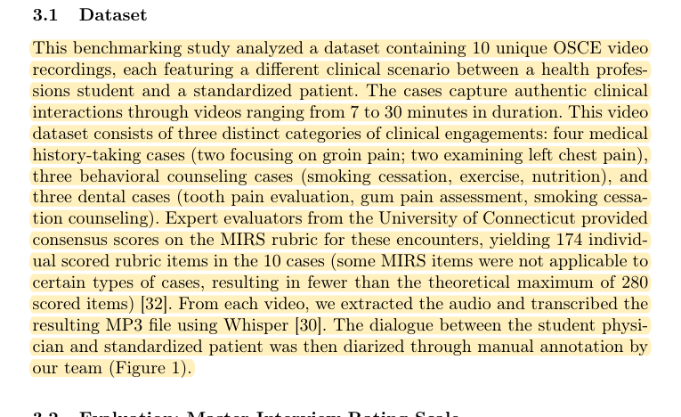
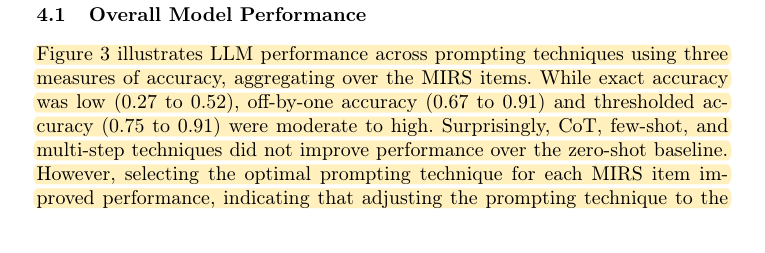
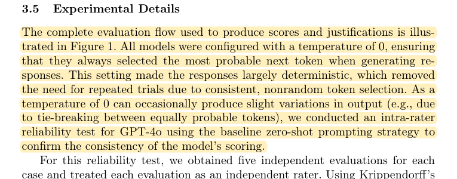

R22 · Virtual patients and OSCEs
Stable repeated LLM scores can still disagree with experts
Benchmarking Generative AI for Scoring Medical Student Interviews in Objective Structured Clinical Examinations (OSCEs)
Jadon Geathers, Yann Hicke et al. · 2025
AIED 2025; peer-reviewed conference paper; local copy: public author manuscript
What the study investigates
The authors compare LLMs scoring medical-student interviews under the MIRS rubric, directly informing a faculty-agreement study.
How it was studied
Ten OSCE videos and 174 expert-consensus scores are evaluated using four models and zero-shot, chain-of-thought, few-shot, and multistep prompting. The study separately reports exact match, agreement within one score level, thresholded classification, and repeatability.
Findings
Mean exact agreement is substantially lower than agreement allowing a one-level difference or threshold classification. Repeated judgments can be highly stable at temperature zero. Strict and permissive metrics answer different questions.
Limits of the evidence
The sample is small, and text alone cannot recover every nonverbal performance feature. The results must not be compressed into a single “approximately 88% OSCE accuracy” claim when that figure refers to a broader binary definition.
How it informs DualGraph-OSCE
The formal AIED 2025 version has DOI 10.1007/978-3-031-98420-4_17; the local PDF is the public author manuscript. The abstract and body give different exact-agreement ranges, with the body also including a theoretical upper bound obtained by selecting the best prompt per item on the same test set, without held-out validation. DualGraph-OSCE must prespecify category meanings and exact decision criteria, publish a confusion matrix, and report repeats as robustness rather than proof of correctness. A plausible explanation cannot make an incorrect category correct.
Where to cite it
Problem statement: scoring reliability and validity. Evaluation: exact versus tolerant agreement and repeatability.
Possible manuscript wording
OSCE scoring studies show substantial differences between exact-score agreement and permissive threshold classification. Repeatability does not establish agreement with expert judgments.
[R22·1]This is a manuscript-specific paraphrase, not a quotation from the source. The excerpts below define what the citation supports. The proposed method and its expected benefits are not findings of the cited paper.
Source passages and precise locations
Page numbers refer to physical pages in the saved original PDF, including any repository cover sheets. Compilation page numbers are listed separately. Yellow highlighting marks the passage used for the argument.
R22-E1Data and expert reference
Original PDF page 4. Highlight compilation page 340. The highlight identifies the passage used here; consult the full original page for its context.

R22-E2Different definitions of accuracy
Original PDF page 8. Highlight compilation page 344. The highlight identifies the passage used here; consult the full original page for its context.

R22-E3Repeated-run stability
Original PDF page 8. Highlight compilation page 344. The highlight identifies the passage used here; consult the full original page for its context.
